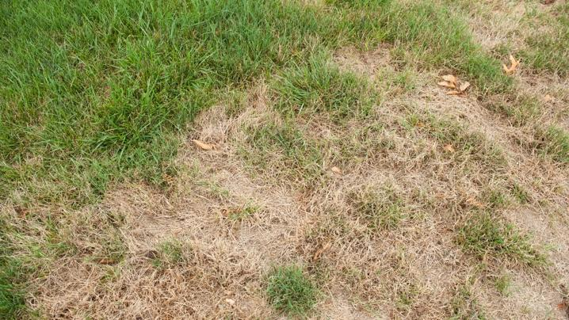
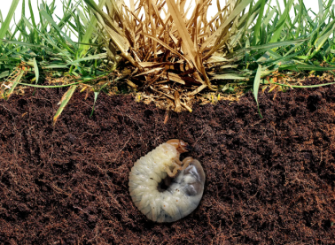
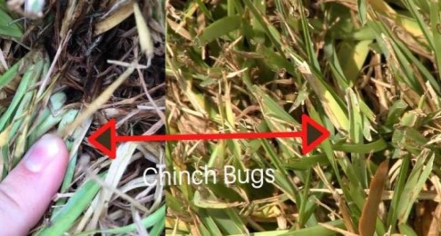
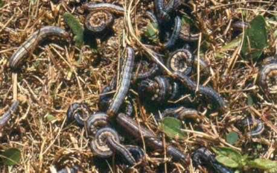

Pest Control

Grubs

White grubs are among the most damaging of pests to your lawn.
They are the larvae of different varieties of scarab beetles.
During early fall, spring, and summer, grubs feast on your lawn from just beneath the surface.
Symptoms: Damage begins with signs of wilted grass blades. Brown turf patches eventually follow into the patch of grass dying.
Grub-damaged turf is easily lifted in spring and summer to reveal grubs underneath. If moles, crows, or skunks are seen feeding on your lawn, they are most likely searching for grubs.
Chinch Bugs

Chinch bugs feed on sap inside of grass blades. When they feed, chinch bugs secrete an anticoagulant that makes the grass stop water absorption.
The end result is that the grass withers and dies.
Symptoms: Symptoms are most noticeable from June to September. This is the time period the chinch bug feeds the most.
First signs include the grass taking on a purple tinge, then wilting due to not being able to absorb water, and eventually dying.
Armyworms

Armyworms are aptly named because they intiate war on your lawn. They are 1-2 inches long and vary in color. They can even be pink.
Armyworms eventually turn into brown moths.
Symptoms: If you notice leaves reduced to a skeleton on plants, or sight of these worms in your lawn, then you might have a problem.
They feed most often in the evening or at night and when invasions are heavy it almost looks like the lawn is moving.